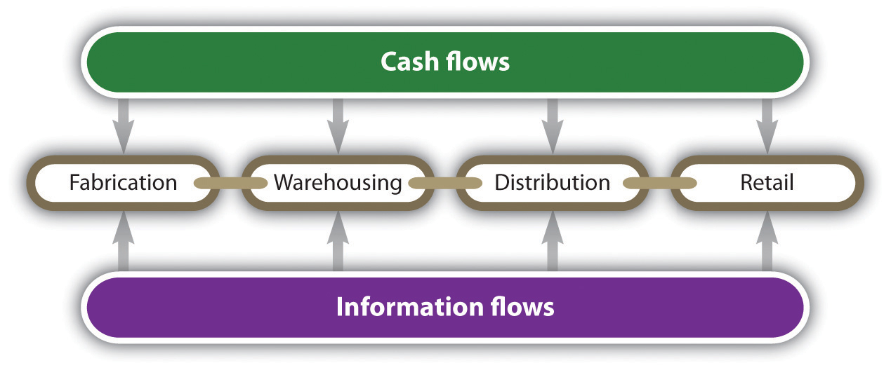
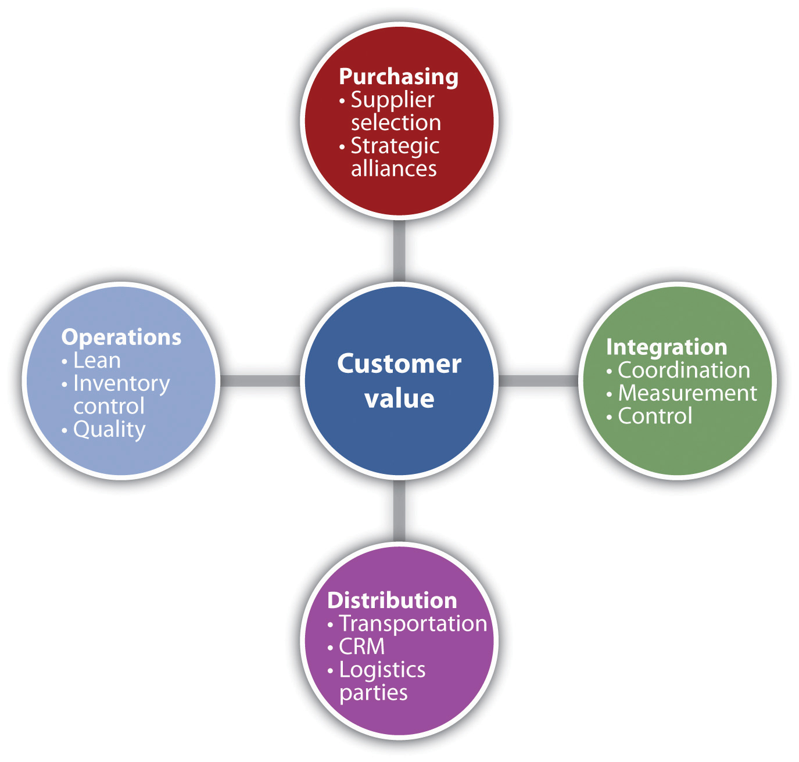

No man is an island, entire of itself.John Donne, “XVII. Meditation,” The Literature Network, accessed February 4, 2012, www.online-literature.com/donne/409.
John Donne
Given the almost daily exposure and coverage of modern business theories or concepts in the popular press, one of the great challenges for both small business owners and corporate executives is the need to separate the wheat from the chaff. In the last four or five decades, businesspeople have heard and read about the next great idea that will revolutionize business as we know it. One almost feels obligated to run out and buy a book that lays out the general principles of concepts such as management by objectivesA program in which the supervisor and the subordinate sit down and map out the objectives for the subordinate to accomplish in the upcoming year., business process reengineeringA management program that analyzes the processes of a business and tries to redesign them so that all non-value-added activities are eliminated., transactional versus transformational leadership, management by walking around, the learning organizationAn organization that is able to adapt to changing situations and pressures. It places a premium on organizations and individuals that can learn from the environment., matrix management, benchmarkingA program where a business looks at the world leaders in particular processes and attempts to emulate them., lean methodologies, and several quality systems—total quality management, the Deming method, and Six Sigma. Some of these have proven to be business fads and have run their course—sometimes with poisonous effects.John Mickletwait and Adrian Woodridge, Witch Doctors: Making Sense of the Management Gurus (New York: Time Books, 1996), 22. Others, such as lean methodologies and some quality systems, have proven to be solid bases on which to improve an organization’s efficiency and effectiveness.
A modern concept that has been popularized over the last two decades is that of supply chain management. In one sense, supply chain management is as old as business itself. One has to look only at the traffic along antiquity’s Silk Road trade route. This route was used to move goods across Asia’s vast steppes between China and the Middle East and as far west as ancient Rome. It possessed most of the fundamental elements of today’s supply chain: goods were produced (make), transported (move), deposited in warehouses (store), purchased by merchants (buy), and sold to customers (sell; see Figure 11.2 "Additional Flows in a Supply Chain"). As will be seen, these five activities are the core of any supply chain.Scott Webster, Principles and Tools for Supply Chain Management (Boston: McGraw-Hill, 2008), 62. If these activities have been universal dimensions of business, then what is different about supply chain management? That question will now be addressed.
Figure 11.1 Material Flows in a Supply Chain

The owners of many small businesses may pride themselves on knowing many—if not all—of their employees. Other small businesses may have some degree of familiarity with most of their customers. They may have professional contacts with someone at the office of their immediate suppliers. Beyond those contacts, the daily demands of operations may mean that they have failed to see their firm’s position in the larger context known as the supply chain. What precisely do we mean when we use the term supply chain managementA systematic and integrated flow of materials, information, and money from the initial raw material supplier through fabricators, manufacturers, warehouses, distribution centers, retailers, and the final customer.? Industrial organizations and academics provide several different definitions of supply chain management.
The Council of Supply Chain Management Professionals provides the following definition: “Supply chain management encompasses the planning and management of all activities involved in sourcing and procurement, conversion, and all logistics management activities. Importantly, it also includes coordination and collaboration with channel partners, which can be suppliers, intermediaries, third party service providers, and customers. In essence, supply chain management integrates supply and demand management within and across companies.”“CSCMP Supply Chain Management Definitions,” Council of Supply Chain Management Professionals, accessed February 1, 2012, cscmp.org/aboutcscmp/definitions.asp.
The Association for Operations Management (APICS) defines a supply chain as “a total systems approach to designing and managing the entire flow of information, materials, and services—from raw material suppliers, through factories and warehouses, and finally to the customer…The chain comprises many links, such as links between suppliers that provide inputs, links to manufacturing and service support operations that transform the input into products and services, and links to the distribution and local service providers that localized the product.”APICS—Operations Management Body of Knowledge Framework, 2nd ed. (Chicago: APICS, 2009).
In a seminal article on the subject, supply chain management was defined as follows: “Supply chain management is the systemic, strategic coordination of the traditional business functions and the tactics across these business functions within a particular company and across businesses within the supply chain, for the purposes of improving the long-term performance of the individual companies and the supply chain as a whole.”John Mentzer, William DeWitt, James Keebler, Soonhong Min, Nancy Nix, Carlo Smith, and Zach Zacharia, “Defining Supply Chain Management,” Journal of Business Logistics 22, no. 2 (2001): 7.
For our purpose, we define the supply chain as follows: “It is a systematic and integrated flow of materials, information, and money from the initial raw material supplier through fabricators, manufacturers, warehouses, distribution centers, retailers, and the final customer. Its ultimate objective is the improvement of the entire process, which means an increase of economic performance of all participants and an increase in value for the end customer.”
If we examine these definitions, several common themes stand out. Supply chain management is not limited to the flow of goods and materials. The successful supply chain requires a consideration of both financial flows and information flows across the entire chain (see Figure 11.2 "Additional Flows in a Supply Chain"). A second theme is that organizations must overcome myopia of just being concerned with their immediate suppliers and customers. They must take into consideration their suppliers’ suppliers and their customers’ customers. To be able to do this, organizations must expand the flow of communication and information.
Figure 11.2 Additional Flows in a Supply Chain
One might easily pose the following question: How has the concept of supply chain management taken off in the last twenty years? The proliferation of supply chain management is a core concept for businesses that can be attributed to several major factors, including the following:
Organizations that have recognized the need to change. Increasingly, more and more businesses recognize that old models may no longer function. In the past, many businesses strove to be vertically integrated. This meant that they wanted to control as many aspects of their operations as possible. Large oil companies exhibit vertical, industry-wide integration. A firm such as Exxon-Mobil has the capacity to carry out almost all the functions associated with the petroleum industry. Exxon-Mobil has units that can explore for oil, drill for oil, transport oil, refine oil into gasoline, and sell it directly to consumers. In this way, it has almost complete control over the entire supply chain. This approach—total vertical integration—may work in some industries where firms recognize that it is economically advantageous to outsource noncore activities. Firms are making the decision whether to make or buy, and they are finding it financially attractive to have other businesses make components or products for them. As outsourcing became more popular, there was immediate recognition that businesses had to pay careful attention to all the elements of their supply chains. They had to develop working relationships with their suppliers and their customers. As will be highlighted in Section 11.2.1 "Developing New Relationships", successful supply chain management requires new approaches for dealing with suppliers. Those businesses that have successfully made this transition can fully exploit the benefits of supply chain management.
Another area where businesses have learned to change, which has greatly impacted the acceptance of supply chain management, is the change from a push philosophy to a pull philosophy. A push philosophy means that a business produces goods and services and pushes it into the marketplace. A push-based system will forecast demand in the market, produce the required amount, push the product out the door, and hope that the forecast was correct. In contrast, a pull philosophy means that the production of goods and services is initiated only when the marketplace or the consumer demands it. Production is initiated by actual demand.
What Is a Supply Chain?
(click to see video)A brief explanation of the supply chain.
Supply Chain: Three Key Things to Know
(click to see video)Rob O’Byrne of the Logistics Bureau talks about three key concepts for a supply chain.
What Is Supply Chain Management?
(click to see video)The first of a series of twelve videos on supply chain management, providing an excellent overview of the subject.
What precisely makes up a supply chain management system? Various authors identify the different components or elements of such a system.Martin Murray, “Introduction to Supply Chain Management,” About.com, accessed February 1, 2012, logistics.about.com/od/supplychainintroduction/a/into_scm.htm; Phillip Edwards, “Supply Chain for Small Businesses and Its Benefit,” Small and Medium Business Corner, April 22, 2011, accessed February 1, 2012, smb-corner.com/2011/04/supply-chain-management-small-business; Joel D. Wisner, G. Keong Leong, and Keah-Choon Tan, Principles of Supply Chain Management: A Balanced Approach (Mason, OH: South-Western, 2004), 13. The simple list would include four core elements: procurement, operations, distribution, and integration.
Figure 11.3 The Core Elements of a Supply Chain Management System
The first of the four elements—procurementA process that not only involves the purchasing of parts, components, or services but also considers that the right parts are delivered in the exact quantities at the correct location on the specified time schedule at minimal cost.—begins with the purchasing of parts, components, or services. However, it does not end with the purchase. Procurement must ensure that the right items are delivered in the exact quantities at the correct location on the specified time schedule at minimal cost. This means that procurement must concern itself with the determination of who should supply the parts, the components, or the services. It must address the question of assurance that these suppliers will deliver as promised. The opening phrase of this question is often as follows: should the business make or buy a particular part or service? The make-or-buy question can have both strategic significance and economic significance. Some businesses will choose not to have others make or provide services because they believe they may lose control over particular technologies or skill sets. Will it benefit a business to have lower cost in the short run yet lose its source of competitive advantage in the long run to another competitor? Overseas outsourcing may pose difficulties with respect to communication difficulties, extended transportation distances, and timelines. The inability to ensure the overall quality of the outsourced item may be a deciding factor in not having another business make the part or provide the service. Recent difficulties with the quality assurance of products made in China have given many American manufacturers second thoughts about outsourcing.
There are, however, reasons for businesses to outsource production or services. The most obvious reason is associated with lower costs. Read the business press and discover the phrase the China price. This refers to the low cost of products produced in China given its low wages. One should not think that outsourcing is associated only with overseas manufacturing. Many firms will domestically outsource certain in-house service activities. The firm ADP specializes in preparing businesses payrolls, employee benefits, and tax compliance. ADP has been successful because it is able to provide a high-quality product at lower cost than many firms could produce in-house. Another reason why a business may outsource production or other activities is that the business is currently unable to meet particular demand levels.
If one were to exclude strategic considerations and merely look at economic issues, many make-or-buy decisions could be fairly straightforward variations of breakeven analysis. Imagine a firm is thinking about outsourcing the manufacture of a particular part to a Chinese firm. The plot is not unique from a technical standpoint, so outsourcing would have no strategic significance. The firm has gathered the data in Table 11.1 "Data for Domestic Production versus Chinese Outsourcing Option" for its own operations and that of the Chinese firm.
Table 11.1 Data for Domestic Production versus Chinese Outsourcing Option
| Costs | Domestic Production ($) | Outsourcing to China ($) |
|---|---|---|
| Fixed costs | 40,000 | 4,000 |
| Labor cost per unit | 9.90 | 4.25 |
| Material cost per unit | 7.20 | 7.20 |
| Transportation cost per unit | 0.40 | 3.80 |
| Tariff duty per unit | 0.00 | 1.50 |
| Total cost per unit | 17.50 | 16.75 |
With these figures, there is no need to conduct a breakeven analysis. Outsourcing to China produces a lower total unit cost, and the fixed costs are significantly lower. The total cost reduction would dictate that China is the preferred location to produce the part. But now envision another scenario, one in which the transportation cost increases by $2.55 (increasing the transportation cost per unit to $6.35) and the tariff duty per unit increases by $1 per unit. These results are presented in Table 11.2 "Revised Data for Domestic Production versus Chinese Outsourcing Option".
Table 11.2 Revised Data for Domestic Production versus Chinese Outsourcing Option
| Costs | Domestic Production ($) | Outsourcing to China ($) |
|---|---|---|
| Fixed costs | 40,000 | 4,000 |
| Labor cost per unit | 9.90 | 4.25 |
| Material cost per unit | 7.20 | 7.20 |
| Transportation cost per unit | 0.40 | 6.35 |
| Tariff duty per unit | 0.00 | 2.50 |
| Total cost per unit | 17.50 | 19.30 |
Given these changes, we can now conduct a breakeven analysis.
| Domestic Production Total Costs | Outsourced to China Total Costs | |
|---|---|---|
| Fixed costs + total variable costs | = | Fixed costs + total variable costs |
| $40,000 + $17.50 * Q | = | $4,000 + $19.30 * Q |
| ($40,000 − $4,000) | = | ($19.30 − $17.50) * Q |
| $36,000 | = | $1.80 * Q |
| break-even point Q | = | 20,000 units |
| Q = Quantity | ||
This simply means that if the demand for the part is fewer than 20,000 units, then it is cheaper to produce the part in China; however, if the demand is greater than 20,000 units, it is cheaper to produce the part domestically.
The key issue in procurement is how one goes about selecting and maintaining a supplier, which can be approached from two directions. The first centers on how a firm might evaluate a potential supplier. The second is how a firm evaluates those businesses that are already suppliers to an operation. When looking at the potential suppliers of a business, a firm may be aided by examining those suppliers with some form of certification. Perhaps the most globally recognized certification program is ISO 9000, a program designed to ensure that suppliers are certified and fully committed to quality production. A supplier that is ISO 9000 certified may mean that incoming goods need not be tested. In examining suppliers, one might also look at the number of employees of the potential supplier who have received certification in the area of supply chain management. The Association for Operations Management, formerly known as the American Production and Inventory Control Society (APICS), has a program to certify professionals in supply chain management. After selecting a supplier, one must have a program that continuously evaluates the capability of the supplier. Some of the capabilities that may be considered include on-time delivery, the accuracy of delivery (i.e., correct items in the correct quantities are shipped), the ability to handle fluctuations in demand, and the ability to hold inventory until needed by the customer. One needs a comprehensive set of metrics to perform such an analysis. One set of metrics will be discussed in Section 11.2.2 "Managing Information in New Ways". In addition, one must think about developing a new type of relationship with suppliers, one that is not adversarial but develops a close working relationship bordering on being an alliance.
The second major element of supply chain management system is operationsThe activities and tasks associated with turning a firm’s inputs (materials, capital, and labor) into goods and services.. Having received raw materials, parts, components, assemblies, or services from suppliers, the firm now must transform them and produce the products or the services that meet the needs of its consumers. It must conduct this transformation in an efficient and effective manner for the benefit of the supply chain management system. We will briefly overview those operational activities that most directly relate to supply chain management.
One element is demand management. This involves attempting to match demand with capacity. In a manufacturing environment, this may entail a better and more detailed production schedule. In a service environment, it may entail rescheduling customer appointments to better match service provider availability. A key element is improvements in inventory control, which may be done by using materials requirement planningA computerized inventory control system that schedules the production of goods and takes into consideration the available and the required inventory. software or instituting a just-in-timeAn approach to inventory that seeks to eliminate excess waste and reduce inventory to a minimal level. program. Just-in-time attempts to create an inventory system where the inventory arrives exactly when it is needed. Another way of achieving operational efficiency to improve the supply chain management system is by adopting lean methodologiesA series of techniques designed to eliminate waste from manufacturing and service processes and provide greater customer value.. The essence of lean is attempting to eliminate all forms of waste from a production or service system.
The third element of the supply chain management system is distributionA process that involves several activities: transportation (logistics), warehousing, and CRM.. Distribution involves several activities—transportation (logisticsThe active management of the distribution of materials throughout a system.), warehousing, and customer relationship management (CRM)A service approach that hopes to build a long-term and sustainable relationship with customers that has value for both the customer and the company.. The first and most obvious is logistics—the transportation of goods across the entire supply chain. The need to efficiently transport goods has led to a hierarchy of logistics providers. Some argue that it now consists of a four-party hierarchy. First-party logistics providers are those who wish to ship goods to a particular location. Second-party logistics providers are those businesses that provide the means of transportation, including shipping freight by air, rail, or truck. Second-party logistics providers may also offer warehousing services to temporarily store goods. Third-party logistics providers specialize in offering an array of services to simplify transportation. They offer services that synthesize a variety of services, including the shipping of goods, warehousing, inventory management, and packaging. They also may offer services associated with facilitating customs operation and the resolution of problems associated with international transportation. The range of services can be so extensive that the literature segments third-party logistics providers into four groups.Susanne Hertz and Monica Alfredsson, “Strategic Development of Third-Party Logistics Providers,” Industrial Marketing Management 32, no. 2 (2003): 139. They range from those businesses that pick up and deliver goods to those businesses that essentially perform the entire logistics function for a customer. In the last fifteen years, a fourth level of logistics providers was added to this hierarchy. Although there is some argument as to what distinguishes sophisticated third-party logistics providers from fourth-party logistics providers, the essential distinction is that fourth-party logistics providers function as consultants for supply chain management logistics issues. They are non-asset-based integrators“Fourth-Party Logistics,” Business Dictionary.com, accessed February 27, 2012, www.businessdictionary.com/definition/fourth-party-logistics-4PL.html.—firms do not own shipping assets or warehouses; they simply provide consulting services.
The CRM component of the distribution element represents an attempt to automate interactions with customers and facilitate the development of sales prospects through software packages. Most small businesses will start using CRM as a means of contacting current customers and future prospective customers. They then move on to software that automates the entire sales process. The ultimate goal of CRM is the greater connection with customers, thus providing them with greater value.
The last element of supply chain management is the need for integrationThe coordination of all activities across the entire supply chain.. At the beginning of this chapter, we mentioned that many small businesses are unfamiliar with their immediate customers and their immediate suppliers; however, they may be part of a much larger chain. It is critical that all participants in the service chain recognize the entirety of the service chain. A failure to overcome the myopia of just being concerned with the immediate customer and the immediate supplier can produce significant disruptions in the entire chain. These disruptions can significantly increase costs and destroy value.
The impact of the failure to adopt a system-wide perspective—that is, examining the totality of the chain—is most clearly seen in what is known as the “bullwhip” effect. This effect illustrates how a narrow perspective can produce unexpected consequences. Envision a classic supply chain composed of a retailer—who is supplied by a wholesaler—who in turn is supplied by a distributor with a product coming from the manufacturer. Each element of this chain must forecast its anticipated demand and determine the appropriate levels of inventory. Because no element of this chain wishes to “stock out”—having insufficient inventory to meet a customer’s demand—each element will carry what is known as safety stock. In many cases, the more certain the demand, the greater the need for such safety stock. If demand at the retail level increases, then it follows that demand will also increase at each level further up the supply chain. If demand decreases at the retail level, the demand will likewise decrease further up the chain. The rate at which demand and inventory levels fluctuate is dependent on the lead time at each level in the chain. The delay between an increase for the retail level and the corresponding increase or decrease at the manufacturing level will be a function of this lead time. The bullwhip effect recognizes that the amplitude of inventory swings increases as one travels up the supply chain because each element of the supply chain is a relatively narrow focus of just trying to meet the needs of their customers. If the forecast for “shared” demand across the entire chain could be made simultaneously or if the lead time could be significantly reduced, then this phenomenon would not be quite as dramatic or problematic. The bullwhip effect calls for integrating information across the entire supply chain.
An enterprise resource planning (ERP)A system that integrates multiple business functions from purchasing to sales, billings, accounting records, and payroll. system can successfully integrate information across the entire supply chain. An ERP system is an integrated set of computer programs that brings information about a firm’s accounting, financial, sales, and operations into a common database.Cecil C. Bozarth and Robert B. Handfield, Introduction to Operations and Supply Chain Management, 2nd ed. (Upper Saddle River, NJ: Pearson Prentice Hall, 2007), 519. One also needs a series of metrics that would indicate the overall performance of the supply chain. This should also be part of the integration process. We discuss such metrics in Section 11.2.2 "Managing Information in New Ways".
Module 2: Buy It: Managing Supply
(click to see video)An introduction to purchasing.
Module 3: Make It: Manufacturing and Operations
(click to see video)Manufacturing and supply chain management in local firms operations.
Module 4: Move It: Transportation and Logistics
(click to see video)Discussion of the difference between transportation and logistics.
Module 5: Sell it and Service It: Retail Considerations
(click to see video)Discussion of supply chains in the retail environment.
Supply Chain Management Description
An introduction to the topic.
www.eil.utoronto.ca/profiles/rune/node5.html
About.com Introduction to Supply Chain Management
Brief coverage of supply chain management for small businesses with additional links.
logistics.about.com/od/forsmallbusinesses/For_the_Small_Business.htm
Big Business Supply Chain Management: A Small Business Option?
Looks at the benefits of supply chain management for smaller businesses.
smallbiztrends.com/2006/05/big-business-supply-chain-management-a-small-business-option.html